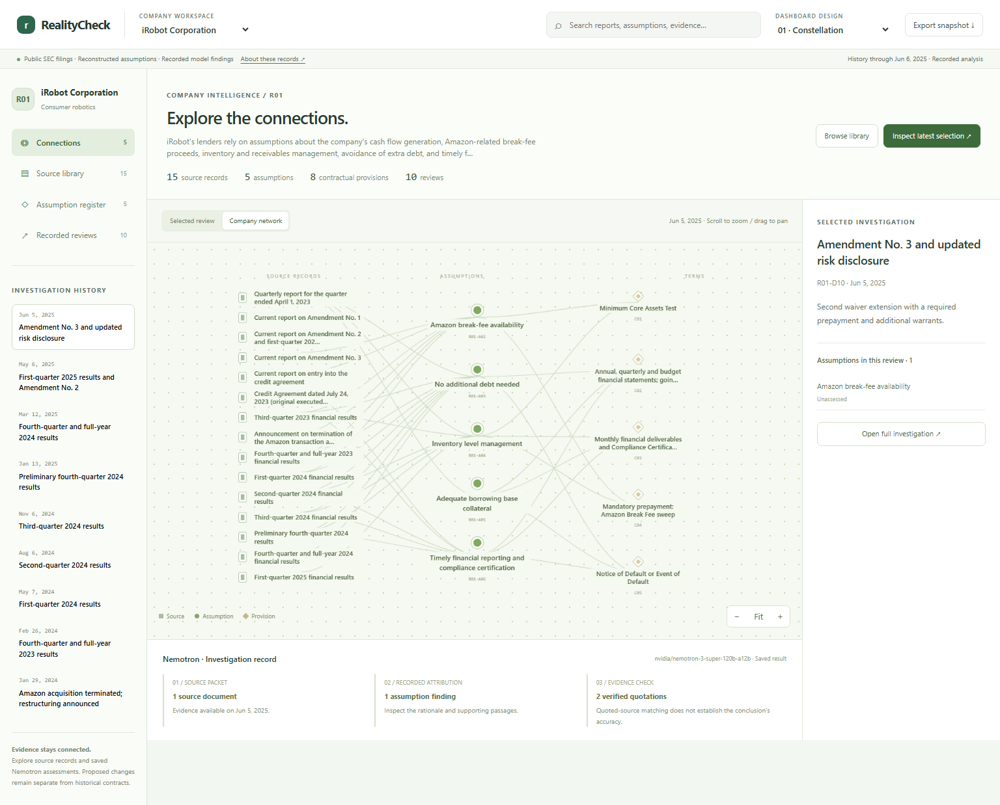
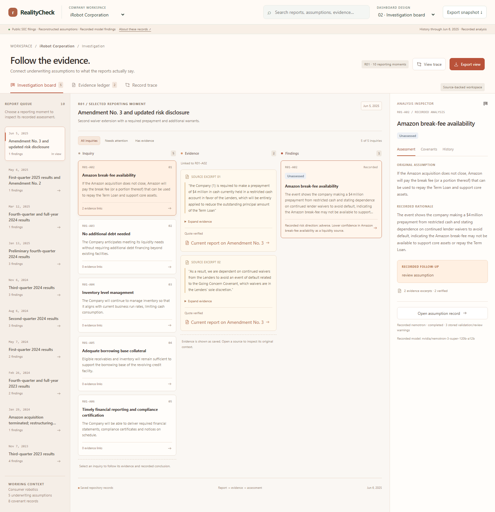
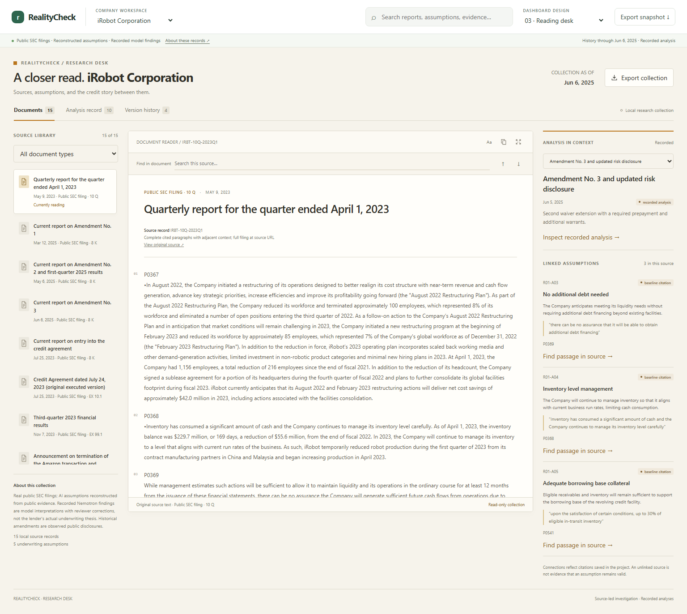
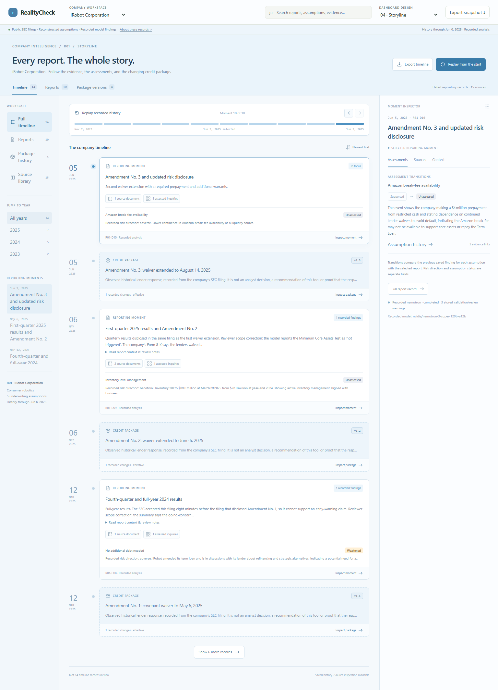
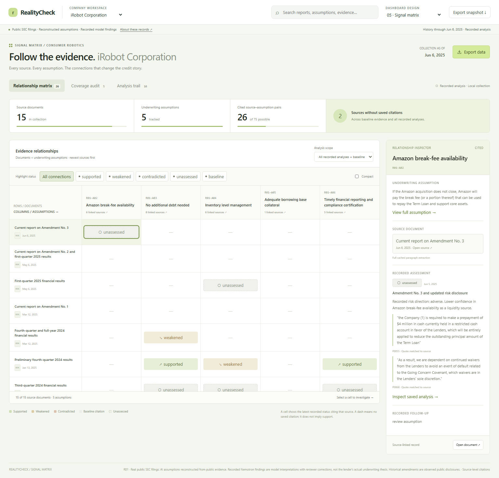

Same company. Five perspectives.
Explore complete workspaces with real source packets, recorded Nemotron assessments, and company-specific review histories.
Three company histories
Live inference remains disconnected.
Open the combined package-history + constellation workspace ↗

Constellation
Explore the company’s evidence network. Follow a source into an assumption, inspect its citations, and trace the related contractual provisions.

Investigation board
Peach and coral. Work through recorded inquiries, supporting evidence, counterevidence, and findings.

Reading desk
Ivory and amber. Read the source, find the passage, and inspect the assumptions and assessments beside it.

Storyline
Sky blue. Move through dated reports, understand changing assessments, and inspect historical package versions.

Signal matrix
White and lime. Compare evidence relationships across documents and inspect every assessment at its intersection.